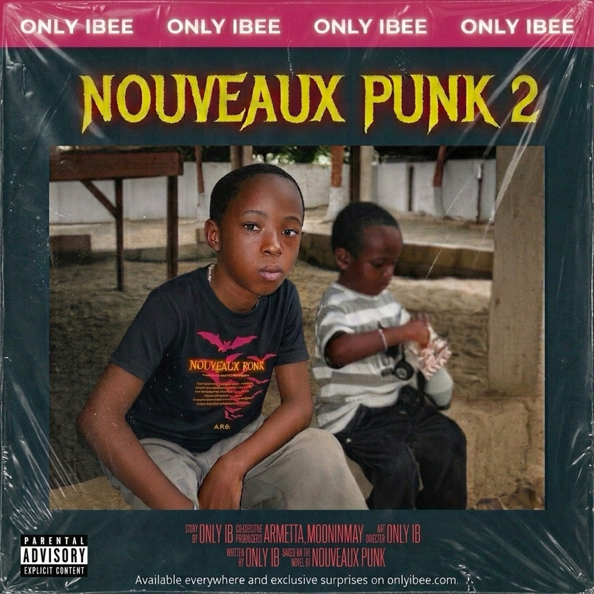

NOUVEAUX PUNK 2
ADVISORY
EXPLICIT CONTENT
26 songs for my 26 years. Toronto and Paris.
NOUVEAUX PUNK is how I turn my issues into art. The songs might sound unrelated, but it's one story — what they all have in common is that I made them when I was feeling very bad. Very, very bad.
That's when I make music without thinking about the outcome, just as a way to evacuate the stress and the pain. When I listen back, it calms me down — like I built the sound of my pain, my fears, my life. The soundtrack of my issues. Very personal, and still open to any human going through those moments.
Technically it's a project where I allow myself to do anything: explore and test my skills across genres. But the main colour is guitar — rock, and RnB grooves.
A Nouveaux Punk, to me, is someone who needs freedom and expression but still keeps order and an aesthetic perfectionism. Between chaos and beauty.